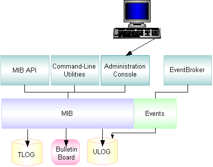

An administrator’s job can be viewed as two broadly defined tasks:
Setup tasks—all the tasks required to prepare your system before booting your application.
Run-time administration—any tasks performed on an application that has been booted.
Setup Tasks
During the setup phase, an administrator is responsible for the planning, design, installation, security, and configuration of the Oracle Tuxedo system. Table 1-1 describes the required and optional tasks during the setup phase.
Table 1-1 Required and Optional Tasks During the Setup Phase
Setup Task
Required
Optional
Collect information from designers, programmers, and business users of the application
X
Set up the hardware and software, and install the Oracle Tuxedo system and the application (installation)
X
Set up the Oracle Tuxedo system parameters that govern how the application uses components (configuration)
X
Configure transactions for domains, machines, groups, interfaces, services, and other required components (configuration)
X
Select and implement security methods for protecting the application and data
X
For CORBA environments, configure an Internet Inter-ORB Protocol (IIOP) Listener/Handler and modify the machine configuration
X
Set up distributed applications with routing tools: factory-based routing for CORBA environments and data-dependent routing for ATMI environments
X
Set up networked applications
X
Configure local and remote domains
X
Set up Workstation clients: add environment tables and a workstation listener, and modify the machine configuration
X
Create an application queue space and modify the configuration to support queued messages
X
Apply service version to Oracle Tuxedo applications
X
After Tuxedo installation, deploy/undeploy the applications from a centralized control platform using deployment/undeployment tool
X
Run-time Tasks
With your Oracle Tuxedo system installed and your TUXCONFIG file loaded, you are ready to boot your application. When your application is launched, you must start monitoring its activities for problems—both actual and potential. Table 1-2 describes the required and optional tasks during the run-time phase.
Table 1-2 Required and Optional Tasks During the Run-time Phase
Run-time Task
Required
Optional
Start up and shut down an application
X
Manage buffers
X
Administer the security of your application
X
Monitor the activities, problems, and performance of your application
X
For ATMI environments, manage transactions
X
For CORBA environments, manage interfaces
X
Manage networked applications
X
Manage remote Workstation clients
X
Subscribe to events
X
Use queued messaging
X
Identify and resolve problems as they occur (troubleshoot)
X
Reassign primary responsibility for your application from the MASTER machine to an alternate (BACKUP) machine (migration) when problems occur on the MASTER (migration)
X
Change system parameters and the selection of services to meet evolving needs (dynamic modification)
X
Refine your application to reflect additional components, such as new machines or servers (dynamic reconfiguration)
X
During run time, you may need to respond quickly to potential problems or evolving requirements of an application. To help you perform these functions, you have a choice of three tools: the Oracle Tuxedo Administration Console, the command-line interface, and the AdminAPI. Table 1-3 describes some of the circumstances in which your intervention may be needed.
Table 1-3 Circumstances Needed in Intervention
To...
You May Want to...
Maximize performance
Adds load balancing or set priorities for interfaces and services.
Fix problems that may develop on the MASTER machine
Replaces it with a designated BACKUP machine.
Change processing and resource usage requirements
Adds machines, servers, clients, interfaces, services, and so on.
Differences Between the Oracle Tuxedo ATMI and CORBA Environments
For the Oracle Tuxedo CORBA environment, the Oracle Tuxedo administration facilities support the administration of applications running within the context of the Object Request Broker (ORB) and the TP Framework.
The UBBCONFIG configuration file for Oracle Tuxedo CORBA environments supports the configuration of client and server applications, as follows:
The RESOURCES section provides application-wide defaults for the sizing of bulletin board tables.
The MACHINES section allows the specification of processor-specific values for sizing of those tables.
The INTERFACES, section allows the specification of information about CORBA interfaces used by the application.
The ROUTING section provides support for a different type of routing criteria used with Tuxedo CORBA environments. Also, existing ROUTING sections that specify Oracle Tuxedo ATMI data-dependent routing parameters continue to work without modification.
In the Oracle Tuxedo ATMI environment, you configure workstation handlers and listeners for connections from client applications to server applications. From an administrative viewpoint, this task is similar in Oracle Tuxedo CORBA environments.
However, the Oracle Tuxedo CORBA environment uses a different communications protocol to connect remote and foreign clients to Oracle Tuxedoserver applications. The protocol is the standard Internet Inter-ORB Protocol (IIOP). Instead of the Oracle Tuxedo Workstation Handler (WSH) process and Workstation Listener (WSL) process, the CORBA environment calls its gateway processes the IIOP Handler (ISH) and the IIOP Listener (ISL). This results in a slight syntax difference, ISL instead of WSL, in the SERVERS section of each application’s UBBCONFIG configuration file.
Overall, the administration tasks for the Oracle Tuxedo CORBA and ATMI environments are similar. There are a few principal differences between the environments, however, as follows:
In both environments, you use a routing criteria to distribute processing to specific server groups. The routing mechanism in an Oracle Tuxedo CORBA environment system is known as factory-based routing. It is fundamentally different than the Oracle Tuxedo ATMI data-dependent routing mechanism.
In the Oracle Tuxedo ATMI environment, you can examine any FML field used for a service invocation to determine the data-dependent routing criteria. In Oracle Tuxedo CORBA environments, the system designer must personally communicate the routing criteria of CORBA interfaces. For Oracle Tuxedo CORBA environments, there is no service request message data or associated buffer information available for routing. This occurs because CORBA routing is performed at the factory, not on a method invocation on the target CORBA object.
You cannot dynamically advertise CORBA interfaces at run time. However, you can suspend or reactivate CORBA interfaces.
No direct ACL control is provided for CORBA interfaces. No control over servants is provided at the administrative level. In the UBBCONFIG configuration file, the MANDATORY_ACL parameter to the SECURITY parameter is ignored.
The LDAP single security administration feature is not supported by the CORBA interface.
Note:
The Management Information Base (MIB) defines the set of classes through which the fundamental aspects of an application can be configured and managed. The MIB classes provide an administrative programming interface to the Oracle Tuxedo CORBA and ATMI environments.
Planning the Design of Your Application
An administrator needs to know a customer’s business requirements and how the software will be used. Once these needs are understood, administrators can work with their system designers and application developers to make sure that the application’s configuration can support its requirements.
Answers to the following preliminary questions may help in planning the design of your application.
How many machines will be used? ____________________
Will client applications reside on machines that are remote from the server applications? _______________________
For ATMI, which services will your application offer? ____________________________________________________________________________________________________________________________
For CORBA, which interfaces will your client or server application use? __________________________________________________________________________________________________________________________
What resource managers (database) will the application use and where will they be located? __________________________________________________________________________________________________________________________
What “open” strings will the resource managers need? ____________________________________________________________________________________________________________________________
What setup information will be needed for an RDBMS? __________________________________________________________________________________________________________________________________________________________________________________________
Will transactions be distributed? ________________
Will the application use global transactions? ________________
What buffer types will be used? ____________________________________________________________
Will data be distributed across machines? _________________________________________________________
To which external domains will the application export services? From which external domains will the application import services? ____________________________________________________________________________________________________________________________________________________________________________________________
Will factory-based or data-dependent routing be used in your application? _________________________________________________________
What are the names of the CORBA interfaces or ATMI services? _________________________________________________________________________________________________________________________
In what order of priority should the interfaces or services be available? _________________________________________________________________________________________________________________________
What are the reliability requirements? Will redundant listener and handler ports be needed? Will replicated server applications be needed? ____________________________________________________________________________________________________________________________
For CORBA environments, will the domain need an Interface Repository (IR) database? If so, will the domain benefit from having IR replicas, and how many IR server applications should be defined? ____________________________________________________________________________________________________________________________
Are there any conversational services? What resource managers do they access? What buffer types do they use? _____________________________________________________________________________________________________________________
The Oracle Tuxedo system gives you a choice of several methods for performing the same set of administrative tasks for either Oracle Tuxedo ATMI or CORBA environments. Whether you are more comfortable using a graphical user interface or entering commands at a shell prompt, you will be able to find a comfortable method of doing your job as the administrator of an Oracle Tuxedo application. Figure 1-1 illustrates the tools you can use to write the configuration file and administer your Oracle Tuxedo application during run time.
Figure 1-1 Administration Tools

Oracle Tuxedo Administration Console—a Web-based tool used to monitor an application, and to dynamically configure its operation.
Oracle Tuxedo MIB Application Programming Interface—an interface to a set of procedures for accessing and modifying information in the MIBs.
Command-line utilities—a set of commands used to manage, activate, configure, and deactivate the application (that is, tmadmin(1), tmboot(1), tmconfig, wtmconfig(1), tmshutdown(1), respectively). For more information, refer to the Oracle Tuxedo Command Reference
See Also
“Management Operations Using the Oracle Tuxedo Administration Console” in Introducing Oracle Tuxedo ATMI
“Managing Operations Using the MIB” in Introducing Oracle Tuxedo ATMI
“Managing Operations Using Command-Line Utilities” in Introducing Oracle Tuxedo ATMI